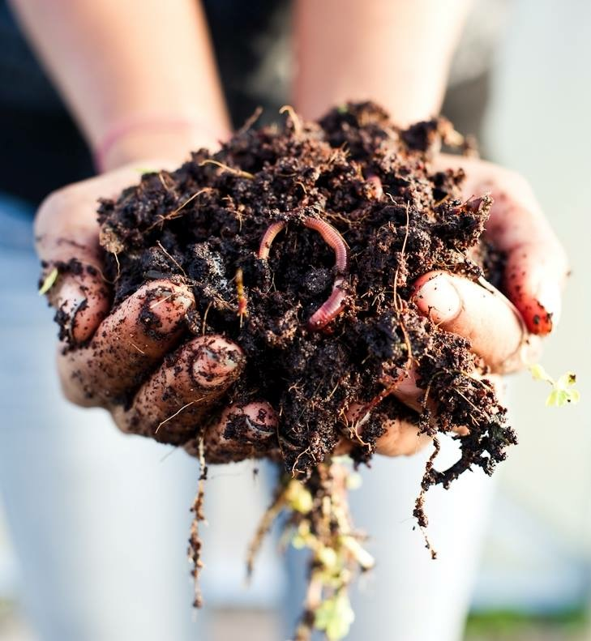
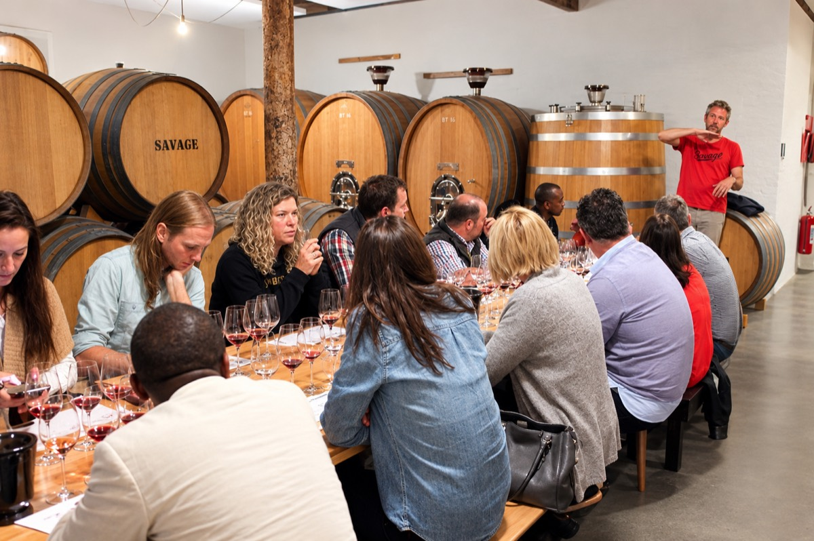

Our story.
Enotri is a boutique wine agency built around growers, provenance, and the pleasure of bringing a good bottle to the right table.
Let the land speak first.

We represent wines that express their true provenance and the dedication of the people who grow them. Our portfolio begins with a person, a piece of land, and a way of farming that deserves to be understood.
Working directly with independent estates, we bring honest, distinctive wines to Alberta restaurants, retailers, and curious tables through the AGLC and Liquor Connect framework.
Short on purpose.
The most important work happens in the vineyard. Before a wine is listed, someone here has walked those rows, tasted in that cellar, and spoken with the person responsible for it.
That keeps the portfolio focused, and gives every bottle an answer when a buyer asks why it tastes the way it does.

Rawlings Munemo.
Rawlings founded Enotri to bring wines of genuine provenance to Alberta, bottles that carry the mark of the people and places behind them.
He works directly with the growers in the portfolio, tasting in their cellars and walking their vineyards before a wine reaches a list.
Wine is better shared.

